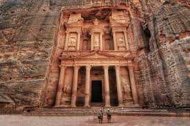

Petra 🏜️
Petra is an ancient Nabatean city located in southern Jordan. Famous for its elaborate tombs, temples, and water management system carved into sandstone cliffs, it is one of the most iconic archaeological sites in the Middle East.
"Petra stands as a monumental testament to the ingenuity, art, and culture of the Nabatean civilization."
Gallery 🏜️


